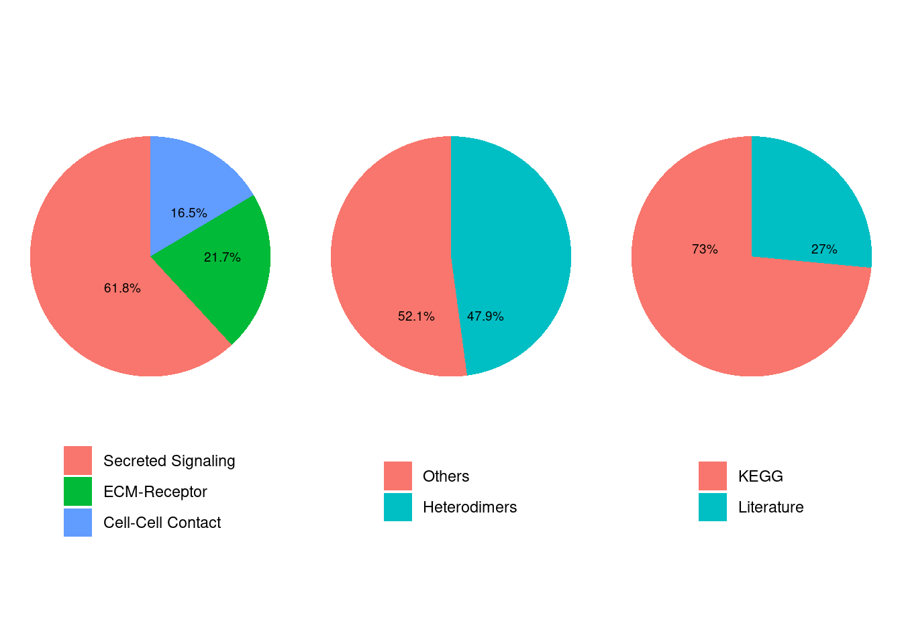
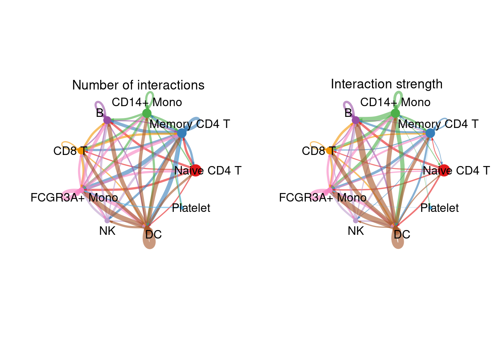
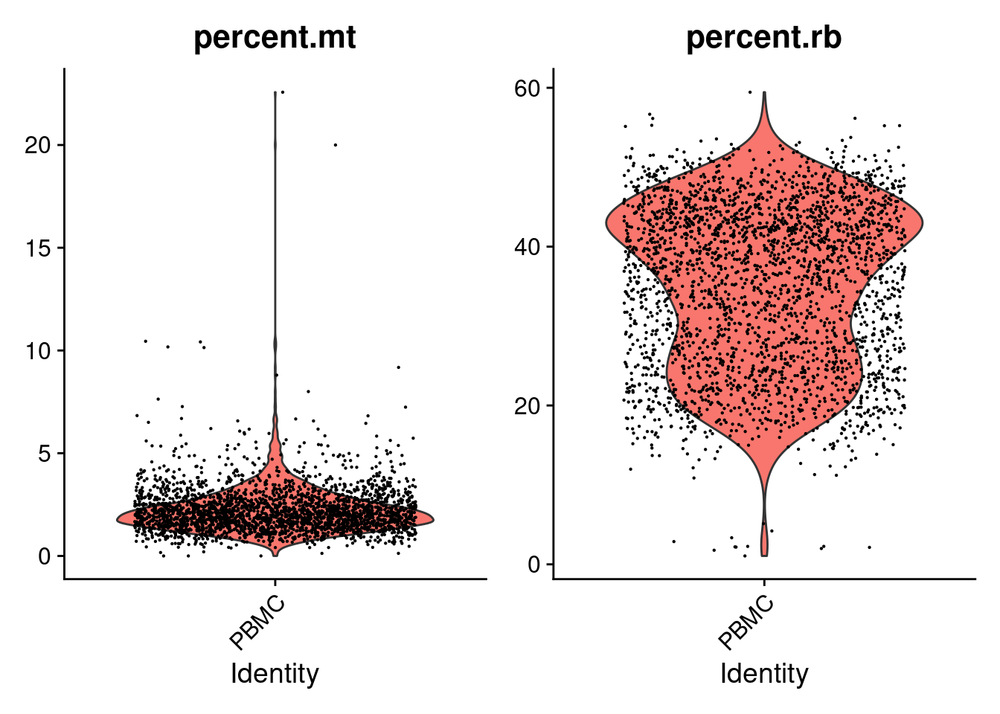
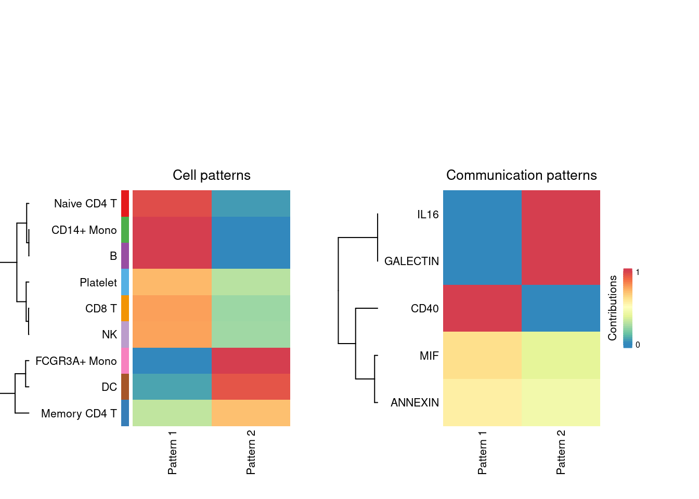
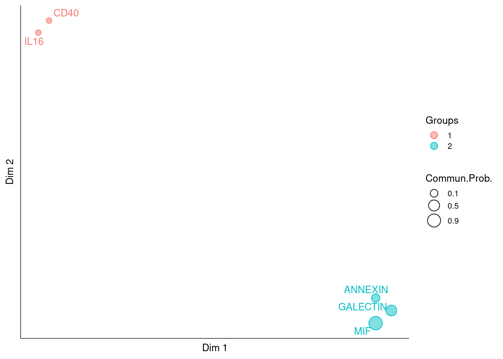
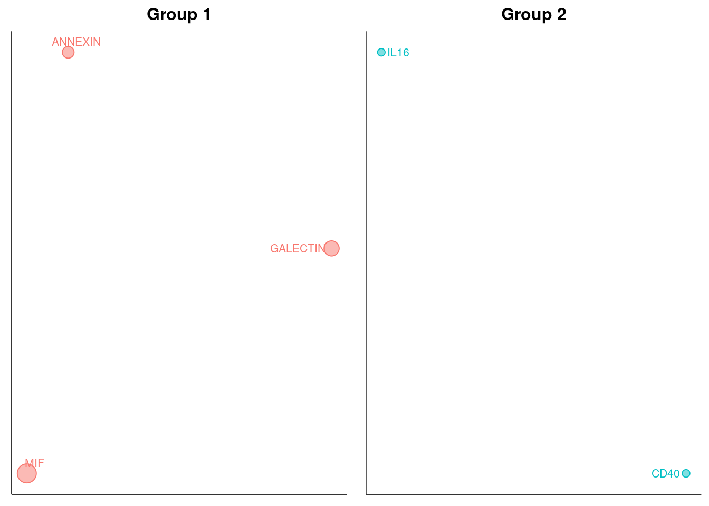

Chapter 6 CellChat
6.1 简介
细胞通讯分析能够帮助我们识别和推断组织微环境中的细胞间相互作用及信号传递
目前已经开发出了多种可用于单细胞数据的细胞通讯分析工具：celltalker，cellphoneDB，iTALK，NicheNet …
这些工具基本原理都是基于构建的受配体数据库和单细胞数据中相关基因的表达水平来推测细胞互作关系
本次课程主要介绍 CellChat 通讯分析工具使用及结果解读，CellChat相比于其他通讯分析工具，主要区别在于：
- 构建了信号分子相互作用的数据库，充分考虑了配体-受体相互作用的已知结构组成；
- 通讯分析在考虑配受体互作的同时考虑了信号通路的关系；
- 通过网络分析工具，模式识别方法和多种学习方法对细胞间通讯进行定量表征和比较；
REF:
6.2 数据加载与预处理
本次课程使用的数据为10X单细胞的PBMC_3K数据(see Chapter 5 富集分析)，基于上一次基本分析课程中生成的最后的rds文件.
6.2.1 加载分析包,数据
Cellchat需要两个输入文件：
- 单个细胞的表达数据
- 细胞对应细胞类型信息
library(CellChat)
library(Seurat)
library(NMF)
library(ggalluvial)
pbmc <- readRDS("./data/PRO_seurat.RDS")
levels(pbmc)## [1] "Naive CD4 T" "Memory CD4 T" "CD14+ Mono" "B" "CD8 T"
## [6] "FCGR3A+ Mono" "NK" "DC" "Platelet"# meta = GetAssayData(pbmc, slot='counts', assay='RNA')
meta <- pbmc@assays$RNA@counts
meta[1:3,1:3]## 3 x 3 sparse Matrix of class "dgCMatrix"
## PBMC_AAACATACAACCAC-1 PBMC_AAACATTGAGCTAC-1 PBMC_AAACATTGATCAGC-1
## MIR1302-10 . . .
## FAM138A . . .
## OR4F5 . . .# 细胞类型信息
idents = data.frame(row.names=rownames(pbmc@meta.data), celltype=Idents(pbmc))
head(idents)## celltype
## PBMC_AAACATACAACCAC-1 Naive CD4 T
## PBMC_AAACATTGAGCTAC-1 B
## PBMC_AAACATTGATCAGC-1 CD14+ Mono
## PBMC_AAACCGTGCTTCCG-1 FCGR3A+ Mono
## PBMC_AAACCGTGTATGCG-1 NK
## PBMC_AAACGCACTGGTAC-1 CD14+ Mono6.2.2 构建CellChat对象
Cellchat可以基于Seurat数据对象和矩阵构建数据对象
# cellchat <- createCellChat( meta , meta=idents , group.by='celltype' )
cellchat <- createCellChat( pbmc , group.by='ident')## Create a CellChat object from a Seurat object## The `data` slot in the `RNA` assay is used
## The `meta.data` slot in the Seurat object is used as cell meta information## Set cell identities for the new CellChat object## The cell groups used for CellChat analysis are Naive CD4 T Memory CD4 T CD14+ Mono B CD8 T FCGR3A+ Mono NK DC Plateletcellchat## An object of class CellChat created from a single dataset
## 32738 genes.
## 2638 cells.levels( cellchat@idents )## [1] "Naive CD4 T" "Memory CD4 T" "CD14+ Mono" "B" "CD8 T"
## [6] "FCGR3A+ Mono" "NK" "DC" "Platelet"6.2.3 设置受配体互作数据库
CellChat内置了手动整理的文献支持的受配体互作关系，包括人和鼠两个物种
## A list includes the ligand-receptor interactions
CellChatDB <- CellChatDB.human # use CellChatDB.mouse if running on mouse data
showDatabaseCategory(CellChatDB)
# interaction_input <- CellChatDB$interaction
# complex_input <- CellChatDB$complex
# cofactor_input <- CellChatDB$cofactor
# geneInfo <- CellChatDB$geneInfo
# CellChatDB <- list()
# CellChatDB$interaction <- interaction_input
# CellChatDB$complex <- complex_input
# CellChatDB$cofactor <- cofactor_input
# CellChatDB$geneInfo <- geneInfo
dplyr::glimpse(CellChatDB$interaction)## Rows: 1,939
## Columns: 11
## $ interaction_name <chr> "TGFB1_TGFBR1_TGFBR2", "TGFB2_TGFBR1_TGFBR2", "TGFB…
## $ pathway_name <chr> "TGFb", "TGFb", "TGFb", "TGFb", "TGFb", "TGFb", "TG…
## $ ligand <chr> "TGFB1", "TGFB2", "TGFB3", "TGFB1", "TGFB1", "TGFB2…
## $ receptor <chr> "TGFbR1_R2", "TGFbR1_R2", "TGFbR1_R2", "ACVR1B_TGFb…
## $ agonist <chr> "TGFb agonist", "TGFb agonist", "TGFb agonist", "TG…
## $ antagonist <chr> "TGFb antagonist", "TGFb antagonist", "TGFb antagon…
## $ co_A_receptor <chr> "", "", "", "", "", "", "", "", "", "", "", "", "",…
## $ co_I_receptor <chr> "TGFb inhibition receptor", "TGFb inhibition recept…
## $ evidence <chr> "KEGG: hsa04350", "KEGG: hsa04350", "KEGG: hsa04350…
## $ annotation <chr> "Secreted Signaling", "Secreted Signaling", "Secret…
## $ interaction_name_2 <chr> "TGFB1 - (TGFBR1+TGFBR2)", "TGFB2 - (TGFBR1+TGFBR2)…# pathway names
unique(CellChatDB$interaction$pathway_name)## [1] "TGFb" "BMP" "BMP10" "GDF" "MSTN"
## [6] "AMH" "GDNF" "NODAL" "ACTIVIN" "WNT"
## [11] "ncWNT" "EGF" "NRG" "FGF" "PDGF"
## [16] "VEGF" "IGF" "INSULIN" "APELIN" "HH"
## [21] "CCL" "CXCL" "MIF" "CX3C" "XCR"
## [26] "IL2" "IL4" "IL6" "IL12" "LIFR"
## [31] "OSM" "IL10" "IL1" "IL17" "CSF"
## [36] "IL16" "EPO" "GH" "PRL" "THPO"
## [41] "CSF3" "IFN-I" "IFN-II" "TNF" "LT"
## [46] "LIGHT" "FASLG" "VEGI" "TRAIL" "EDA"
## [51] "NGF" "RANKL" "TWEAK" "CD70" "CD30"
## [56] "CD137" "OX40" "GITRL" "APRIL" "BAFF"
## [61] "CD40" "SPP1" "ADIPONECTIN" "RESISTIN" "VISFATIN"
## [66] "ANGPTL" "ANGPT" "MK" "PTN" "PERIOSTIN"
## [71] "AGT" "GPR" "BRADYKININ" "COMPLEMENT" "CCK"
## [76] "EDN" "GALANIN" "GHRELIN" "KISS1" "MELANOCORTIN"
## [81] "NMU" "NPFF" "NPY" "NPW-B" "NTS"
## [86] "OPIOID" "HCRT" "OXT" "SEMATOSTATIN" "TAC"
## [91] "UTS2" "AVP" "PRLH" "PARs" "PMCH"
## [96] "PROK" "PACAP" "VIP" "NPR1" "NPR2"
## [101] "KIT" "GIPR" "FSH" "LHB" "TSH"
## [106] "NT" "FLT3" "HGF" "SEMA3" "CALCR"
## [111] "ANNEXIN" "APJ" "CRH" "ENHO" "GAS"
## [116] "GCG" "GHRH" "GNRH" "GRN" "GUCA"
## [121] "RLN" "LEP" "GALECTIN" "NPS" "NPVF"
## [126] "OSTN" "PROS" "PSAP" "PTH" "QRFP"
## [131] "CHEMERIN" "SAA" "UGRP1" "SCT" "SLURP"
## [136] "BTLA" "TRH" "UCN" "UROTENSIN" "BAG"
## [141] "COLLAGEN" "FN1" "LAMININ" "CHAD" "RELN"
## [146] "THBS" "VTN" "TENASCIN" "NPNT" "DSPP"
## [151] "VWF" "BSP" "DMP1" "AGRN" "HSPG"
## [156] "ADGRE5" "ALCAM" "ANXA1" "APP" "CADM"
## [161] "CD22" "CD226" "CD23" "CD34" "CD39"
## [166] "CD45" "CD46" "CD48" "CD6" "CD80"
## [171] "CD86" "CD96" "CD99" "CDH" "CDH1"
## [176] "CDH5" "CEACAM" "CLDN" "CLEC" "CNTN"
## [181] "CSPG4" "DESMOSOME" "EPGN" "EPHA" "EPHB"
## [186] "ESAM" "GP1BA" "ICAM" "ICOS" "ITGB2"
## [191] "JAM" "L1CAM" "LCK" "MADCAM" "MAG"
## [196] "MHC-I" "MHC-II" "MPZ" "NCAM" "NECTIN"
## [201] "NEGR" "NGL" "NKG2D" "NOTCH" "NRXN"
## [206] "OCLN" "PD-L1" "PDL2" "PECAM1" "PTPRM"
## [211] "PVR" "SELE" "SELL" "SELPLG" "SEMA4"
## [216] "SEMA5" "SEMA6" "SEMA7" "SN" "THY1"
## [221] "TIGIT" "VCAM" "VISTA"# CellChatDB.use <- CellChatDB
## key : the name of the variable in CellChatDB interaction_input
CellChatDB.ss <- subsetDB(CellChatDB, search = "Secreted Signaling", key='annotation')
# set the used database in the object
cellchat@DB <- CellChatDB.ss6.2.4 预处理表达数据
数据处理过程包括： - 鉴定一个细胞类型中的过表达的配体或受体 - 鉴定过表达的配受体互作 - 基于PPI网络平滑基因表达（可选：适用于处理低深度单细胞测序处理的dropout）
# subset表达数据，提取仅在互作数据库中的基因，减少下游分析数据量
cellchat <- subsetData(cellchat) # This step is necessary even if using the whole database
# future::plan("multiprocess", workers = 4)
# 识别在单个细胞类型中过表达配/受体
cellchat <- identifyOverExpressedGenes(cellchat)
# 识别过表达互作对
cellchat <- identifyOverExpressedInteractions(cellchat)
# 平滑表达值（目的是消除dropout影响，可选不用）
# We also provide a function to project gene expression data onto protein-protein interaction (PPI) network. Specifically, a diffusion process is used to smooth genes’ expression values based on their neighbors’ defined in a high-confidence experimentally validated protein-protein network. This function is useful when analyzing single-cell data with shallow sequencing depth because the projection reduces the dropout effects of signaling genes, in particular for possible zero expression of subunits of ligands/receptors.
cellchat <- projectData(cellchat, PPI.human)数据预处理工作完成，接下来开始细胞通讯的分析
6.3 计算和推断细胞间通讯网络
CellChat通过为每个通讯互作对分配一个发生概率和置换检验，推断有生物学意义的细胞间通讯.
CellChat models the probability of cell-cell communication by integrating gene expression with prior known knowledge of the interactions between signaling ligands, receptors and their cofactors using the law of mass action.
The number of inferred ligand-receptor pairs clearly depends on the method for calculating the average gene expression per cell group. By default, CellChat uses a statistically robust mean method called trimean, which produces fewer interactions than other methods.
we provide an option for using other methods, such as 5% and 10% truncated mean, to calculating the average gene expression. Of note, ‘trimean’ approximates 25% truncated mean, implying that the average gene expression is zero if the percent of expressed cells in one group is less than 25%. To use 10% truncated mean, USER can set type = "truncatedMean" and trim = 0.1. If very well-known signaling pathways in the studied biological process are not predicted, USER can try truncatedMean with different trim values.
check the average expression of signaling genes of interest:
computeAveExpr(cellchat, features = c("CXCL12","CXCR4"), type = "truncatedMean", trim = 0.1)
6.3.1 细胞通讯互作可能性的计算
# 互作可能性计算
cellchat <- computeCommunProb(cellchat, raw.use = TRUE)
# 过滤表达细胞比例低的互作对
cellchat <- filterCommunication(cellchat, min.cells = 10)
# 提取关注得细胞间通讯关系
df.net <- subsetCommunication(cellchat)
head(df.net)## source target ligand receptor prob pval interaction_name
## 1 CD14+ Mono CD14+ Mono MIF CD74_CXCR4 0.06302724 0.00 MIF_CD74_CXCR4
## 2 NK CD14+ Mono MIF CD74_CXCR4 0.02707739 0.04 MIF_CD74_CXCR4
## 3 DC CD14+ Mono MIF CD74_CXCR4 0.06314493 0.03 MIF_CD74_CXCR4
## 4 Naive CD4 T B MIF CD74_CXCR4 0.05922030 0.00 MIF_CD74_CXCR4
## 5 Memory CD4 T B MIF CD74_CXCR4 0.04867580 0.00 MIF_CD74_CXCR4
## 6 CD14+ Mono B MIF CD74_CXCR4 0.13948229 0.00 MIF_CD74_CXCR4
## interaction_name_2 pathway_name annotation
## 1 MIF - (CD74+CXCR4) MIF Secreted Signaling
## 2 MIF - (CD74+CXCR4) MIF Secreted Signaling
## 3 MIF - (CD74+CXCR4) MIF Secreted Signaling
## 4 MIF - (CD74+CXCR4) MIF Secreted Signaling
## 5 MIF - (CD74+CXCR4) MIF Secreted Signaling
## 6 MIF - (CD74+CXCR4) MIF Secreted Signaling
## evidence
## 1 PMID: 29637711; PMID: 24760155
## 2 PMID: 29637711; PMID: 24760155
## 3 PMID: 29637711; PMID: 24760155
## 4 PMID: 29637711; PMID: 24760155
## 5 PMID: 29637711; PMID: 24760155
## 6 PMID: 29637711; PMID: 24760155# 提取特定细胞类型间通讯关系
df.net2 <- subsetCommunication(cellchat, sources.use=c('Naive CD4 T','Memory CD4 T','CD8 T') , targets.use= c('CD14+ Mono','B'))
head(df.net2)## source target ligand receptor prob pval interaction_name
## 1 Naive CD4 T B MIF CD74_CXCR4 0.05922030 0 MIF_CD74_CXCR4
## 2 Memory CD4 T B MIF CD74_CXCR4 0.04867580 0 MIF_CD74_CXCR4
## 3 CD8 T B MIF CD74_CXCR4 0.05953380 0 MIF_CD74_CXCR4
## 4 Naive CD4 T B MIF CD74_CD44 0.01194597 0 MIF_CD74_CD44
## 5 CD8 T B MIF CD74_CD44 0.01201241 0 MIF_CD74_CD44
## 6 Memory CD4 T CD14+ Mono LGALS9 PTPRC 0.01482312 0 LGALS9_CD45
## interaction_name_2 pathway_name annotation
## 1 MIF - (CD74+CXCR4) MIF Secreted Signaling
## 2 MIF - (CD74+CXCR4) MIF Secreted Signaling
## 3 MIF - (CD74+CXCR4) MIF Secreted Signaling
## 4 MIF - (CD74+CD44) MIF Secreted Signaling
## 5 MIF - (CD74+CD44) MIF Secreted Signaling
## 6 LGALS9 - CD45 GALECTIN Secreted Signaling
## evidence
## 1 PMID: 29637711; PMID: 24760155
## 2 PMID: 29637711; PMID: 24760155
## 3 PMID: 29637711; PMID: 24760155
## 4 PMID: 29637711; PMID: 26175090
## 5 PMID: 29637711; PMID: 26175090
## 6 PMID: 30120235# 提取特定信号通路中的通讯关系
df.net3 <- subsetCommunication(cellchat, signaling = c("IL16", "ANNEXIN"))
head(df.net3)## source target ligand receptor prob pval interaction_name
## 1 DC FCGR3A+ Mono IL16 CD4 0.002438534 0 IL16_CD4
## 2 DC DC IL16 CD4 0.002442359 0 IL16_CD4
## 3 Naive CD4 T Memory CD4 T ANXA1 FPR1 0.008976133 0 ANXA1_FPR1
## 4 Memory CD4 T Memory CD4 T ANXA1 FPR1 0.026202872 0 ANXA1_FPR1
## 5 CD14+ Mono Memory CD4 T ANXA1 FPR1 0.036361292 0 ANXA1_FPR1
## 6 CD8 T Memory CD4 T ANXA1 FPR1 0.028045102 0 ANXA1_FPR1
## interaction_name_2 pathway_name annotation evidence
## 1 IL16 - CD4 IL16 Secreted Signaling KEGG: hsa04060
## 2 IL16 - CD4 IL16 Secreted Signaling KEGG: hsa04060
## 3 ANXA1 - FPR1 ANNEXIN Secreted Signaling PMID: 23230437
## 4 ANXA1 - FPR1 ANNEXIN Secreted Signaling PMID: 23230437
## 5 ANXA1 - FPR1 ANNEXIN Secreted Signaling PMID: 23230437
## 6 ANXA1 - FPR1 ANNEXIN Secreted Signaling PMID: 232304376.3.2 推断通路水平的互作网络
通过汇总与整个通路关联的配受体互作可能性，计算得到通路水平的互作可能性
# NB: The inferred intercellular communication network of each ligand-receptor pair and each signaling pathway is stored in the slot ‘net’ and ‘netP’, respectively.
cellchat <- computeCommunProbPathway(cellchat)
cellchat@netP## $pathways
## [1] "MIF" "IL16" "CD40" "ANNEXIN" "GALECTIN"
##
## $prob
## , , MIF
##
## Naive CD4 T Memory CD4 T CD14+ Mono B CD8 T
## Naive CD4 T 0.00000000 0.01127254 0.00000000 0.07116628 0.02710081
## Memory CD4 T 0.00000000 0.00000000 0.00000000 0.04867580 0.00000000
## CD14+ Mono 0.01989238 0.02852038 0.08497827 0.16967506 0.09020500
## B 0.00000000 0.01116769 0.00000000 0.07053089 0.02685274
## CD8 T 0.00000000 0.01133527 0.00000000 0.07154621 0.02724920
## FCGR3A+ Mono 0.00000000 0.00000000 0.00000000 0.04743704 0.00000000
## NK 0.00000000 0.01200067 0.02707739 0.07556574 0.02882155
## DC 0.00000000 0.02857560 0.06314493 0.16997259 0.06705222
## Platelet 0.00000000 0.00000000 0.00000000 0.00000000 0.00000000
## FCGR3A+ Mono NK DC Platelet
## Naive CD4 T 0.03154709 0 0.04514987 0
## Memory CD4 T 0.02579485 0 0.03701212 0
## CD14+ Mono 0.07738846 0 0.13543673 0
## B 0.03125962 0 0.04474418 0
## CD8 T 0.03171903 0 0.04539248 0
## FCGR3A+ Mono 0.02512302 0 0.03605895 0
## NK 0.03354040 0 0.04796012 0
## DC 0.07753076 0 0.13568172 0
## Platelet 0.00000000 0 0.00000000 0
##
## , , IL16
##
## Naive CD4 T Memory CD4 T CD14+ Mono B CD8 T FCGR3A+ Mono NK
## Naive CD4 T 0 0 0 0 0 0.000000000 0
## Memory CD4 T 0 0 0 0 0 0.000000000 0
## CD14+ Mono 0 0 0 0 0 0.000000000 0
## B 0 0 0 0 0 0.000000000 0
## CD8 T 0 0 0 0 0 0.000000000 0
## FCGR3A+ Mono 0 0 0 0 0 0.000000000 0
## NK 0 0 0 0 0 0.000000000 0
## DC 0 0 0 0 0 0.002438534 0
## Platelet 0 0 0 0 0 0.000000000 0
## DC Platelet
## Naive CD4 T 0.000000000 0
## Memory CD4 T 0.000000000 0
## CD14+ Mono 0.000000000 0
## B 0.000000000 0
## CD8 T 0.000000000 0
## FCGR3A+ Mono 0.000000000 0
## NK 0.000000000 0
## DC 0.002442359 0
## Platelet 0.000000000 0
##
## , , CD40
##
## Naive CD4 T Memory CD4 T CD14+ Mono B CD8 T FCGR3A+ Mono NK DC
## Naive CD4 T 0 0 0 0 0 0 0 0
## Memory CD4 T 0 0 0 0 0 0 0 0
## CD14+ Mono 0 0 0 0 0 0 0 0
## B 0 0 0 0 0 0 0 0
## CD8 T 0 0 0 0 0 0 0 0
## FCGR3A+ Mono 0 0 0 0 0 0 0 0
## NK 0 0 0 0 0 0 0 0
## DC 0 0 0 0 0 0 0 0
## Platelet 0 0 0 0 0 0 0 0
## Platelet
## Naive CD4 T 0.000000000
## Memory CD4 T 0.000000000
## CD14+ Mono 0.006728257
## B 0.000000000
## CD8 T 0.000000000
## FCGR3A+ Mono 0.000000000
## NK 0.000000000
## DC 0.000000000
## Platelet 0.000000000
##
## , , ANNEXIN
##
## Naive CD4 T Memory CD4 T CD14+ Mono B CD8 T FCGR3A+ Mono NK DC
## Naive CD4 T 0 0.008976133 0 0 0 0.006014284 0 0
## Memory CD4 T 0 0.026202872 0 0 0 0.017658008 0 0
## CD14+ Mono 0 0.036361292 0 0 0 0.024587369 0 0
## B 0 0.000000000 0 0 0 0.000000000 0 0
## CD8 T 0 0.028045102 0 0 0 0.018911147 0 0
## FCGR3A+ Mono 0 0.023350119 0 0 0 0.015720532 0 0
## NK 0 0.038433882 0 0 0 0.026006959 0 0
## DC 0 0.037222001 0 0 0 0.025176658 0 0
## Platelet 0 0.002513510 0 0 0 0.001680512 0 0
## Platelet
## Naive CD4 T 0
## Memory CD4 T 0
## CD14+ Mono 0
## B 0
## CD8 T 0
## FCGR3A+ Mono 0
## NK 0
## DC 0
## Platelet 0
##
## , , GALECTIN
##
## Naive CD4 T Memory CD4 T CD14+ Mono B CD8 T
## Naive CD4 T 0.00000000 0.00000000 0.00000000 0.00000000 0.00000000
## Memory CD4 T 0.01393544 0.01291004 0.03297463 0.01330445 0.02768069
## CD14+ Mono 0.00000000 0.00000000 0.00000000 0.00000000 0.00000000
## B 0.00000000 0.00000000 0.00000000 0.00000000 0.00000000
## CD8 T 0.00000000 0.00000000 0.00000000 0.00000000 0.00000000
## FCGR3A+ Mono 0.03384769 0.03137580 0.07899137 0.03232709 0.06628783
## NK 0.00000000 0.00000000 0.00000000 0.00000000 0.00000000
## DC 0.03227231 0.02991405 0.07539678 0.03082158 0.06327267
## Platelet 0.00000000 0.00000000 0.00000000 0.00000000 0.00000000
## FCGR3A+ Mono NK DC Platelet
## Naive CD4 T 0.00000000 0.00000000 0.00000000 0
## Memory CD4 T 0.03689730 0.01493936 0.02135914 0
## CD14+ Mono 0.00000000 0.00000000 0.00000000 0
## B 0.00000000 0.00000000 0.00000000 0
## CD8 T 0.00000000 0.00000000 0.00000000 0
## FCGR3A+ Mono 0.08815769 0.03625913 0.05167941 0
## NK 0.00000000 0.00000000 0.00000000 0
## DC 0.08416315 0.03457354 0.04928895 0
## Platelet 0.00000000 0.00000000 0.00000000 06.3.3 汇总及展示细胞通讯网络整体结果
对计算结果汇总整合，展示整体细胞通讯状态
# 整合通讯网络结果
# USER can also calculate the aggregated network among a subset of cell groups by setting sources.use and targets.use.
cellchat <- aggregateNet(cellchat)
groupSize <- as.numeric(table(cellchat@idents))
# showing the number of interactions or the total interaction strength (weights) between any two cell groups using circle plot.
par(mfrow = c(1,2), xpd=TRUE)
# 整合的互作对数量展示
netVisual_circle(cellchat@net$count, vertex.weight = groupSize, weight.scale = T, label.edge= F, title.name = "Number of interactions")
# 整合的互作强度数量展示
netVisual_circle(cellchat@net$weight, vertex.weight = groupSize, weight.scale = T, label.edge= F, title.name = "Interaction strength")
# 分细胞类型展示
# control the parameter edge.weight.max so that we can compare edge weights between differet networks.
weight_mat <- cellchat@net$weight
par(mfrow = c(3,3),mgp=c(0,0,0), xpd=TRUE)
for (cel in unique(cellchat@idents)){
cir_mat <- matrix(0, nrow = nrow(weight_mat), ncol = ncol(weight_mat), dimnames = dimnames(weight_mat))
cir_mat[cel, ] <- weight_mat[cel, ]
netVisual_circle( cir_mat, vertex.weight= groupSize, weight.scale= T,edge.weight.max = max(weight_mat), vertex.label.cex=0.4,title.name=cel)
}
6.4 多种形式的互作通讯网络可视化
在推断出细胞间通信网络之后，CellChat提供了进一步数据探索、分析和可视化的各种功能
- It provides several ways for visualizing cell-cell communication network, including hierarchical plot, circle plot, Chord diagram, and bubble plot.
- It provides an easy-to-use tool for extracting and visualizing high-order information of the inferred networks. For example, it allows ready prediction of major signaling inputs and outputs for cell populations and how these populations and signals coordinate together for functions.
- It can quantitatively characterize and compare the inferred cell-cell communication networks using an integrated approach by combining social network analysis, pattern recognition, and manifold learning approaches.
6.4.1 信号通路可视化
提供了多种可视化方式：
- 层次图
- 圈图
- 弦图
- 热图
- 柱状图
6.4.2 信号通路水平展示
通过整合特定通路的所有受配体对展示推断的信号网络
主要功能函数：netVisual_aggregate
par(mfrow = c(1,1), xpd=TRUE)
netVisual_aggregate(cellchat, signaling = "MIF", vertex.receiver=c(1:4) )
netVisual_aggregate(cellchat, signaling = "MIF", layout = "circle")
netVisual_aggregate(cellchat, signaling = "MIF", layout = "chord")## Note: The second link end is drawn out of sector 'CD14+ Mono'.## Note: The second link end is drawn out of sector 'B'.
## 进阶弦图可视化展示
par(mfrow=c(1,1))
levels(cellchat@idents)## [1] "Naive CD4 T" "Memory CD4 T" "CD14+ Mono" "B" "CD8 T"
## [6] "FCGR3A+ Mono" "NK" "DC" "Platelet"ct_group = c('T','T','M','B','T','M','MK','DC','P')
names(ct_group) = levels(cellchat@idents)
ct_group## Naive CD4 T Memory CD4 T CD14+ Mono B CD8 T FCGR3A+ Mono
## "T" "T" "M" "B" "T" "M"
## NK DC Platelet
## "MK" "DC" "P"netVisual_chord_cell(cellchat, signaling= 'MIF', group= ct_group, small.gap=0, big.gap=10 )## Plot the aggregated cell-cell communication network at the signaling pathway level## Note: The second link end is drawn out of sector 'CD14+ Mono'.## Note: The second link end is drawn out of sector 'B'.
## 热图可视化展示
# "count": comparing the number of interactions; "weight": comparing the total interaction weights (strength)
netVisual_heatmap(cellchat, signaling = "MIF", color.heatmap = "Reds", measure= 'weight')## Do heatmap based on a single object
netVisual_heatmap(cellchat, signaling = "MIF", color.heatmap = "Reds", measure= 'count')## Do heatmap based on a single object
netVisual_heatmap(cellchat, signaling = NULL, color.heatmap = "Reds", measure= 'count')## Do heatmap based on a single object
## 通路中互作对贡献程度计算和展示
netAnalysis_contribution(cellchat, signaling = "MIF")
6.4.3 快速探索推演的网络
netVisual supports an output in the formats of svg, png and pdf.
# Access all the signaling pathways showing significant communications
# pathways.show.all <- cellchat@netP$pathways
# # check the order of cell identity to set suitable vertex.receiver
# levels(cellchat@idents)
# vertex.receiver = seq(1,4)
# for (i in 1:length(pathways.show.all)) {
# # Visualize communication network associated with both signaling pathway and individual L-R pairs
# netVisual(cellchat, signaling = pathways.show.all[i], vertex.receiver = vertex.receiver, layout = "hierarchy")
# # Compute and visualize the contribution of each ligand-receptor pair to the overall signaling pathway
# gg <- netAnalysis_contribution(cellchat, signaling = pathways.show.all[i])
# ggsave(filename=paste0(pathways.show.all[i], "_L-R_contribution.pdf"), plot=gg, width = 3, height = 2, units = 'in', dpi = 300)
# }6.4.4 通讯互作配受体对水平展示
展示指定受配体对的信号网络
主要功能函数：netVisual_individual to extract all the significant interactions (L-R pairs) and related signaling genes for a given signaling pathway.
pairLR <- extractEnrichedLR(cellchat, signaling = "ANNEXIN", geneLR.return = FALSE)
pairLR## interaction_name
## 1 ANXA1_FPR1netVisual_individual(cellchat, signaling= "ANNEXIN", pairLR.use= pairLR[1] , vertex.receiver= c(1:4) )
netVisual_individual(cellchat, signaling= "ANNEXIN", pairLR.use= pairLR[1] , layout = "circle" )
## [[1]]netVisual_individual(cellchat, signaling= "ANNEXIN", pairLR.use= "ANXA1_FPR1" , layout = "chord" )## Note: The second link end is drawn out of sector 'Memory CD4 T'.## Note: The second link end is drawn out of sector 'FCGR3A+ Mono'.
## [[1]]6.4.5 多个信号通路或互作对的可视化
气泡图展示指定通路或受配体对互作可能性及统计学显著性
主要功能函数：netVisual_bubble
# 指定细胞类型
netVisual_bubble(cellchat, sources.use = c(1:5), targets.use = c(3:6), remove.isolate = FALSE )## Comparing communications on a single object
# 指定信号通路
netVisual_bubble(cellchat, signaling = c("MIF","ANNEXIN") )## Comparing communications on a single object
# 指定配受体对
pairLR.use <- extractEnrichedLR(cellchat, signaling = c("MIF","ANNEXIN","IL16"))
netVisual_bubble(cellchat, pairLR.use = pairLR.use )## Comparing communications on a single object
# 信号通路互作基因表达水平
plotGeneExpression(cellchat, signaling = "IL16")## Scale for 'y' is already present. Adding another scale for 'y', which will
## replace the existing scale.## Scale for 'y' is already present. Adding another scale for 'y', which will
## replace the existing scale.
netVisual_bubble(cellchat, pairLR.use = extractEnrichedLR(cellchat, signaling='IL16') )## Comparing communications on a single object
6.5 系统性分析细胞通讯网络
为了便于理解复杂的细胞间通信网络，CellChat通过从图论、模式识别和流形学习中提取的方法量化互作网络
- 通过网络中心性判断给定信号网络的主要信号来源和目标以及调节者和影响者
- 利用模式识别的方法预测特定细胞类型的关键输入输出信号
- 从功能和拓扑学角度将信号通路分组
- 通过多个网络的联合流形学习来描述保守的和上下文特定的信号通路
6.5.1 识别信号角色和主要贡献信号
CellChat通过计算细胞组的网络中心性识别细胞通讯网络中的：发送者，接收者，调节者和影响者
6.5.2 通路信号角色识别及可视化
To visualize the dominant senders (sources) and receivers (targets) in a 2D space using scatter plot.
# 计算网络中心性
cellchat <- netAnalysis_computeCentrality(cellchat, slot.name = "netP")
# 通路网络中心性热图
netAnalysis_signalingRole_network(cellchat, signaling = "MIF", width = 8, height = 4, font.size = 12)
6.5.3 特定细胞类型中输入输出信号贡献程度
- Outgoing：揭示了发送细胞(即作为信号源的细胞)如何相互协调，以及它们如何与特定的信号通路协调以驱动通信
- Incoming：展示目标细胞(即作为信号接收器的细胞)如何相互协调，以及它们如何与特定的信号通路协调以响应传入信号
# 信号角色散点图展示
netAnalysis_signalingRole_scatter(cellchat)## Signaling role analysis on the aggregated cell-cell communication network from all signaling pathways
# 热图展示
ht1 <- netAnalysis_signalingRole_heatmap(cellchat, pattern = "outgoing")
ht2 <- netAnalysis_signalingRole_heatmap(cellchat, pattern = "incoming")
ht1 + ht2
6.6 全局信号模式识别
除了对单个信号通路通讯的分析，cellchat还提供了全局通讯模式分析的方法来探索多个细胞和通路对功能的协调.
An important question is how multiple cell groups and signaling pathways coordinate to function.
6.6.1 确定信号模式数量
library(NMF)
library(ggalluvial)
# selectK to infer the number of patterns, which is based on two metrics that have been implemented in the NMF R package, including Cophenetic and Silhouette.
selectK(cellchat, pattern = "outgoing")
6.6.2 识别信号模式
分泌信号类型分为：outgoing和incoming
信号模式有助于探索多个细胞类型或信号通路的协同作用
# Both Cophenetic and Silhouette values begin to drop suddenly when the number of outgoing patterns is 3.
nPatterns = 2
# Outgoing patterns reveal how the sender cells (i.e. cells as signal source) coordinate with each other as well as how they coordinate with certain signaling pathways to drive communication.
cellchat <- identifyCommunicationPatterns(cellchat, pattern = "outgoing", k = nPatterns)
netAnalysis_river(cellchat, pattern = "outgoing")## Please make sure you have load `library(ggalluvial)` when running this function
netAnalysis_dot(cellchat, pattern = "outgoing")
# Incoming patterns show how the target cells (i.e. cells as signal receivers) coordinate with each other as well as how they coordinate with certain signaling pathways to respond to incoming signals.
# selectK(cellchat, pattern = "incoming")6.7 Manifold and classification learning analysis of signaling networks
CellChat is able to quantify the similarity between all significant signaling pathways and then group them based on their cellular communication network similarity. Grouping can be done either based on the functional or structural similarity.
- Functional similarity: High degree of functional similarity indicates major senders and receivers are similar, and it can be interpreted as the two signaling pathways or two ligand-receptor pairs exhibit similar and/or redundant roles. The functional similarity analysis requires the same cell population composition between two datasets.
- Structural similarity: A structural similarity was used to compare their signaling network structure, without considering the similarity of senders and receivers.
cellchat <- computeNetSimilarity(cellchat, type = "structural")
cellchat <- netEmbedding(cellchat, type = "structural")## Manifold learning of the signaling networks for a single dataset#> Manifold learning of the signaling networks for a single dataset
cellchat <- netClustering(cellchat, type = "structural")## Classification learning of the signaling networks for a single dataset#> Classification learning of the signaling networks for a single dataset
# Visualization in 2D-space
netVisual_embedding(cellchat, type = "structural", label.size = 3.5)
netVisual_embeddingZoomIn(cellchat, type = "structural", nCol = 2)